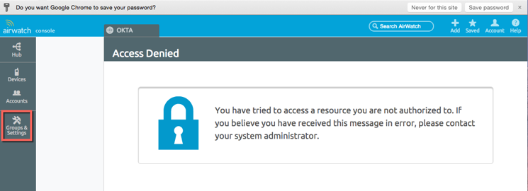
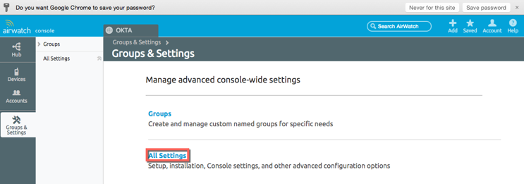
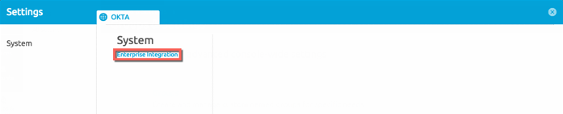
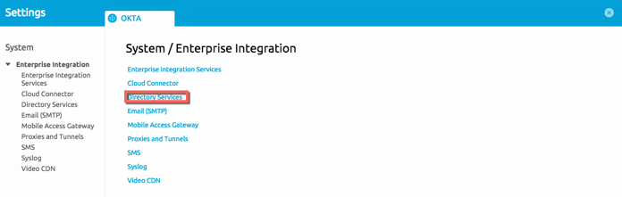
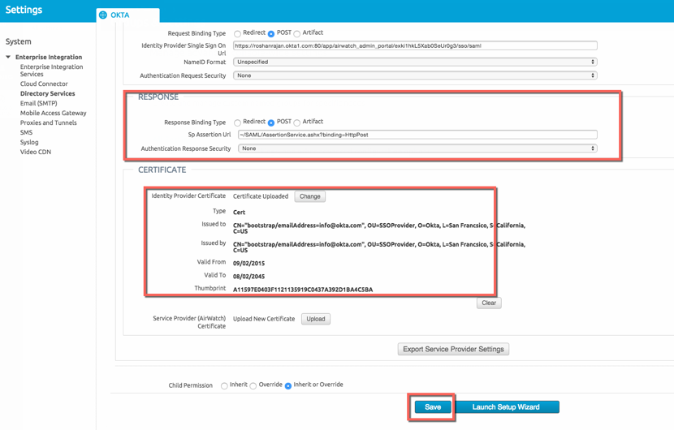
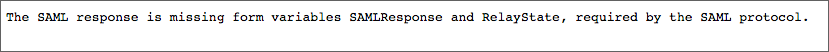
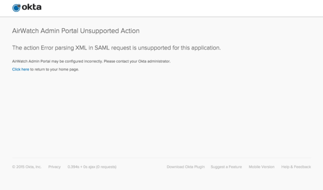

Login to your Airwatch Admin Portal Account.
Select Groups and Settings:

Select All Settings:

Select Enterprise Integration:

Select Directory Services:

Enter the following settings (see screen shot at end of step for reference):
Check the Use SAML for Authentication box.
In the SAML Section:
Service Provider ID: Make sure this is Airwatch.
Identity Provider ID: Copy and paste the following into this field.
Sign into the Okta Admin Dashboard to generate this variable.
In the REQUEST section:
Request Binding Type: Select POST.
Identity Provider Single Sign On URL: Copy and paste the following into this field:
Sign into the Okta Admin Dashboard to generate this variable.NameID Format: Select Unspecified.

Continue with the following settings (see screen shot at end of step for reference):
In the RESPONSE Section:
Response Binding Type: Select POST.
Leave the other values as-is.
In the CERTIFICATE section, first download then Upload the following certificate:
Sign into the Okta Admin Dashboard to generate this variable.
Select Save

Done!
Notes:
SP-initiated flows and Just In Time (JIT) provisioning are supported.
IdP-initiated flows are not supported.
If you see either of the following messages, your SAML settings have not been configured correctly:

